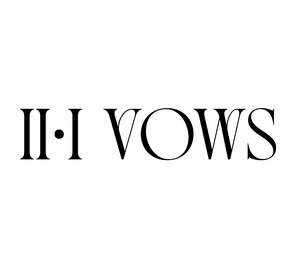

Trade Mark Journal No.2025/016 18 April 2025
UK00004183377 2 April 2025 (41)

- Class 41
- Photography; Film production; Portrait photography; Aerial photography; Portrait photography services; Photography services; Photography instruction; Macro photography services; Audio and video production, and photography; Film editing (Photographic -); Audio, video and multimedia production, and photography; Aerial photography via drones; Photographer services; Education services relating to photography; Photographic imaging services by drone; Post-production editing services in the field of music, videos and film; Aerial videography services; Photo editing; Audio and video editing services; Video editing services for events; Video editing; Editing of video recordings; Video recording services; Sound recording and video entertainment services; Audio and video recording services; Studio services for the recording of videos; Recording studio services for videos; Video entertainment services; Providing audio or video studio services; Video production services; Digital video, audio and multimedia entertainment publishing services; Audio, film, video and television recording services; Video imaging services by drone; Recording, film, video and television studio services; Rental of video cameras; Video cameras (Rental of -); Video and audio rental services; Videotape editing; Video tape editing; Editing (Videotape -); Provision of video recording studio services; Rental services for audio and video equipment; Hire of video recordings; Editing of audio recordings; Film editing (Cinematographic -); Services for the production of entertainment in the form of video; Cinematographic film studio services; Recording studio services for films; Audio recording studio services; Film editing; Special effects animation services for film and video; Audio recording and production services; Production of video recordings; Video rental services; Production of video and audio recordings; Music recording studio services; Rental of video recordings; Services for the showing of video recordings; Audio recording services; Cinematographic entertainment services; Entertainment services for matching users with audio and video recordings; Production of video films; Production of entertainment in the form of video tapes; Video equipment hire; Providing audio or video studios; Hire of video recorders; Video production; Video film production; Studio services (Recording -); Recording studio services; Production of pre-recorded video films; Film studio services; Rehearsal [recording] studio services; Rental of video tapes and motion pictures; Production of sound and video recordings; Audio entertainment services; Production of educational sound and video recordings; Rental of sound and video recordings; Sound recording studio services; Production of video tapes for corporate use in management educational training; Audio production services; Production of video tapes for corporate use in corporate educational training; Services in the production of animated motion picture entertainment; Lighting productions for entertainment purposes.
Two One Vows LTD